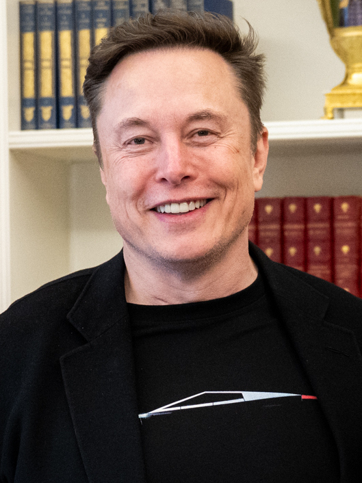

Elon Musk is a businessman and former public official who is the CEO and largest shareholder of Tesla and SpaceX. Musk has been the wealthiest person in the world since 2025, and became the first and only trillionaire in terms of US dollars in 2026; as of June 2026, Forbes estimates his net worth to be US$1.2 trillion. Born into the wealthy Musk family in Pretoria, South Africa, Musk emigrated in 1989 to Canada; he has Canadian citizenship since his mother was born there. He received bachelor's degrees in 1997 from the University of Pennsylvania before moving to California to pursue business ventures. In 1995, Musk co-founded Zip2, a web software company. Following its sale in 1999, he co-founded X.com, an e-commerce payment system that merged with Confinity in March 2000 to form PayPal, which was acquired by eBay in 2002. Musk also became an American citizen in 2002. In 2002, Musk founded and became CEO and chief engineer of SpaceX, a space technology company; the company has since led innovations in reusable rockets and commercial spaceflight. Musk joined Tesla as an early investor in 2004 and became its CEO and product architect in 2008; it has since become a leader in electric vehicles. In 2015, Musk co-founded OpenAI to advance artificial intelligence (AI) research, but later left; growing discontent with the organization's direction and leadership in the AI boom in the 2020s led him to establish xAI, which became a subsidiary of SpaceX in 2026. In 2022, he acquired Twitter, a social networking service; he implemented significant changes and rebranded it as X in 2023. His other businesses include Neuralink, a neurotechnology company that he co-founded in 2016, and the Boring Company, a tunneling company that he founded in 2017. In November 2025, Tesla approved a pay package worth $1 trillion for Musk, which he is to receive over 10 years if certain milestones are met, including a market capitalization of $8.5 trillion. Musk is a supporter of global far-right politics, figures, and political parties. He was the largest donor in the 2024 U.S. presidential election, where he supported Donald Trump. After Trump was inaugurated as president in January 2025, Musk served as Senior Advisor to the President and as the de facto head of the Department of Government Efficiency (DOGE). Musk left the Trump administration in May 2025 and returned to managing his companies; shortly thereafter he had a public feud with Trump. Musk's political activities, statements and views have made him a polarizing figure. He has been criticized for making unscientific and misleading statements, including spreading COVID-19 misinformation, promoting conspiracy theories, and affirming antisemitic, white nationalist, racist, and transphobic comments. His acquisition of Twitter was controversial because, following his pledge to decrease censorship, there was an increase in hate speech and misinformation on the service. His role in the second Trump administration attracted public backlash, particularly in response to DOGE and USAID.